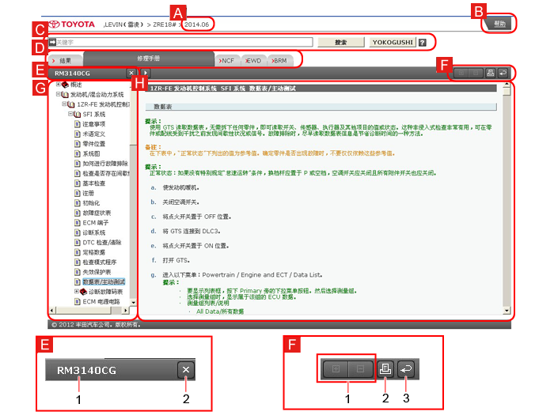
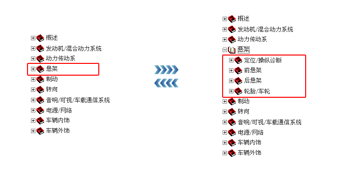

通过点击标签，可以切换与首页填写的适合的产品日期对应的手册（服务信息）。
各手册的内容和结构以树状显示，全书的概貌和详细信息清晰明了。双击树状目录即可显示要查看的信息。
阅读手册的过程中也可以使用各手册的搜索框进行关键词搜索。

| A | 车辆信息 显示在首页中填写的车辆信息。 |
||||||||||||||||||||||||||||
|---|---|---|---|---|---|---|---|---|---|---|---|---|---|---|---|---|---|---|---|---|---|---|---|---|---|---|---|---|---|
| B | 帮助 显示本网站的使用说明和功能。 |
||||||||||||||||||||||||||||
| C | 关键字搜索框 可输入关键字进行搜索。 |
||||||||||||||||||||||||||||
| D | 手册标签 切换手册。
提示
|
||||||||||||||||||||||||||||
| E | 1 | 出版号 显示手册的出版号。 |
|||||||||||||||||||||||||||
| 2 | 退出 关闭树状目录。 |
||||||||||||||||||||||||||||
| 3 | 变更显示宽度 扩大或缩小树状目录显示宽度。 |
||||||||||||||||||||||||||||
| F | 1 | 显示/隐藏检查程序（仅修理手册） 显示/隐藏详细步骤，例如拆卸、安装和检查。 |
|||||||||||||||||||||||||||
| 2 | 打印 打印显示的详细信息。 |
||||||||||||||||||||||||||||
| 3 | 后退 返回各手册之前显示的画面（最多五次）。 切换标签，返回另一手册。 |
||||||||||||||||||||||||||||
| G | 树状目录 以树状显示内容。 |
||||||||||||||||||||||||||||
| H | 手册显示 显示手册内容。 |
||||||||||||||||||||||||||||
点击”+“、图标或类别，可显示章节、标题和项目。点击”-“可关闭显示的章节、标题等。
以修理手册为例
